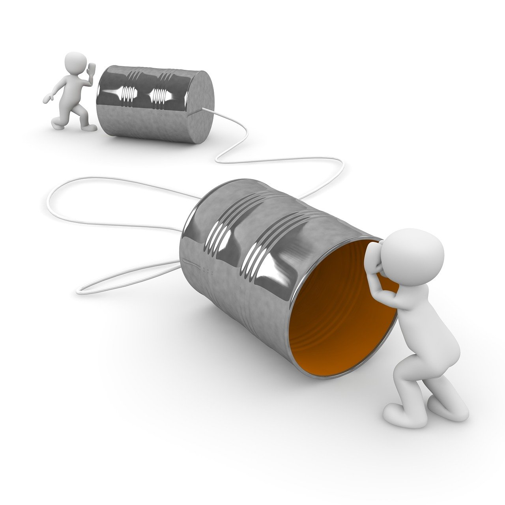

We're happy to hear from you and are dedicated to providing the best support possible. Your feedback, questions, and suggestions are essential to us as we continually strive to improve our platform and create the best experience for our community. There are several ways to get in touch with us: Email Feel free to send us an email at support@ourplatform.com. We'll do our best to respond to your inquiry within 24-48 hours. Social Media Connect with us on our social media platforms, including Facebook, Twitter, and Instagram. We love to engage with our community and share updates, inspiration, and stories from our members. Live Chat If you have a question or need assistance, you can reach our support team via live chat, available from 9 AM to 5 PM (EST), Monday through Friday. Simply click the chat icon in the bottom right corner of our website to get started. We value your input and appreciate you taking the time to connect with us. Your feedback helps us grow and better serve our community. Thank you for being a part of our journey, and we look forward to hearing from you soon!
